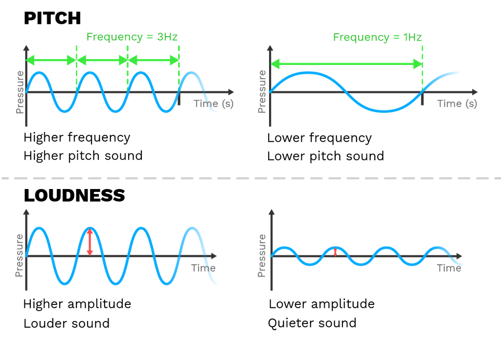
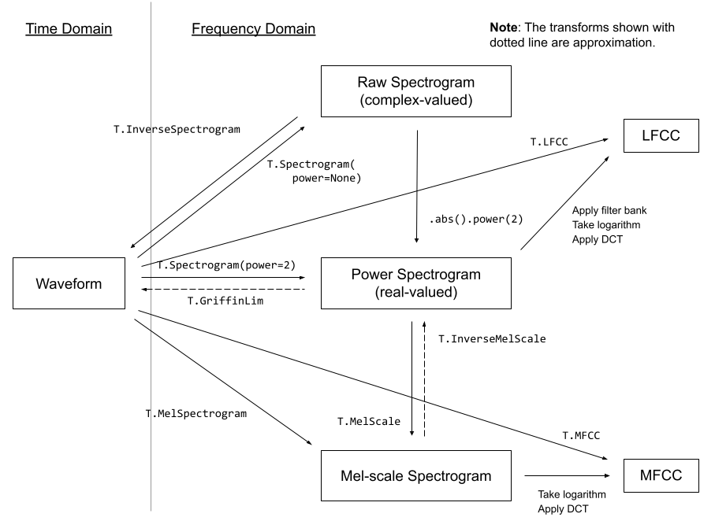
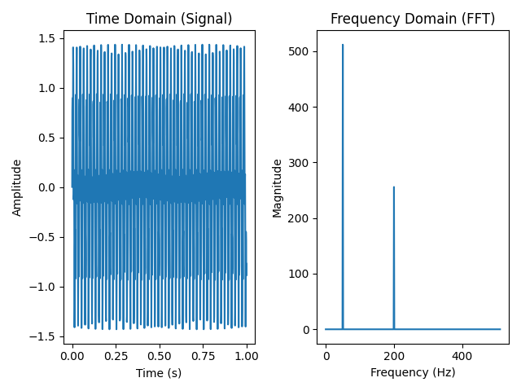

8.1 Speech Feature Extraction
Created Date: 2025-05-31
Grant Sanderson's But what is the Fourier Transform? is the picture behind the spectrogram.
8.1.1 Digit Audio
In physics, sound is a vibration that propagates as an acoustic wave through a transmission medium such as a gas, liquid or solid. In human physiology and psychology, sound is the reception of such waves and their perception by the brain. Only acoustic waves that have frequencies lying between about 20 Hz and 20 kHz, the audio frequency range, elicit an auditory percept in humans.
We can vividly experience sound waves here in SoundWaves — they’re like ripples spreading across the surface of water when a stone is thrown in, propagating outward in waves through the air.
The main properties of sound waves are:
Frequency is the number of complete oscillations or cycles of a sound wave that occur in one second. It's measured in Hertz (Hz).
Amplitude is the maximum displacement or distance that the particles of a medium move from their rest position as the sound wave passes through. It's often related to the pressure variations in the medium.
Wavelength \(\lambda\) is the physical distance between two consecutive identical points on a wave, such as from one compression to the next compression, or from one rarefaction to the next rarefaction.

Figure 1 - Sound Properties
8.1.2 Audio Format
Audio formats are file formats used to store digital audio data on computers and other devices. They can be broadly categorized into uncompressed, lossless, and lossy formats:
Uncompressed formats like WAV and AIFF retain all original audio data, resulting in high-quality audio but large file sizes.
Lossless formats like FLAC and ALAC compress audio data without losing any quality, offering a good balance between file size and quality.
Lossy formats like MP3 and AAC achieve smaller file sizes by discarding some audio data, which can impact sound quality, especially at lower bitrates.
Waveform Audio File Format (WAVE, or WAV due to its filename extension) is an audio file format standard for storing an audio bitstream on personal computers.
8.1.3 FFmpeg Tools
FFmpeg is the leading multimedia framework, able to decode, encode, transcode, mux, demux, stream, filter and play pretty much anything that humans and machines have created. It supports the most obscure ancient formats up to the cutting edge.
8.1.4 Feature Extractions
torchaudio implements feature extractions commonly used in the audio domain. They are available in torchaudio.functional and torchaudio.transforms .
functional implements features as standalone functions. They are stateless.
transforms implements features as objects, using implementations from functional and torch.nn.Module . They can be serialized using TorchScript.
The following diagram shows the relationship between common audio features and torchaudio APIs to generate them.

Figure 1 - Audio Feature Extractions
For the complete list of available features, please refer to the documentation.
8.1.4.1 FFT
FFT helps us find out which frequencies are present in a signal, and how strong they are. You feed it a time-domain signal (e.g., a waveform), and it returns a frequency-domain representation (a spectrum).
File simple_fft.py show a example, create a signal with two frequencies: 50Hz and 120Hz, FFT is used to extract the hidden frequency components from the time domain.
sample_rate = 1024
duration = 1
t = numpy.linspace(0, duration, sample_rate, endpoint=False)
freq1 = 50
freq2 = 200
signal = numpy.sin(2 * numpy.pi * freq1 * t) + 0.5 * numpy.sin(2 * numpy.pi * freq2 * t)
fft_result = numpy.fft.fft(signal)
freqs = numpy.fft.fftfreq(len(t), 1 / sample_rate)
positive_freqs = freqs[:sample_rate // 2]
magnitude = numpy.abs(fft_result)[:sample_rate // 2]
Figure 2 - Simple FFT
8.1.4.1 Spectrogram
To get the frequency make-up of an audio signal as it varies with time, you can use torchaudio.transforms.Spectrogram() .
The core of spectrogram computation is (short-term) Fourier transform, and the n_fft parameter corresponds to the \(N\) in the following definition of descrete Fourier transform:
The value of n_fft determines the resolution of frequency axis. However, with the higher n_fft value, the energy will be distributed among more bins, so when you visualize it, it might look more blurry, even thought they are higher resolution.
8.1.4.2 GriffinLim
To recover a waveform from a spectrogram, you can use torchaudio.transforms.GriffinLim .
The same set of parameters used for spectrogram must be used.
A magnitude spectrogram has thrown the phase away, so there is no single inverse FFT that restores the wave. Griffin–Lim guesses a phase, inverts the STFT, transforms again, and writes the target magnitude back over the new one while keeping the updated phase. Each round is a projection toward a waveform whose STFT magnitude matches the spectrogram.
extractions.py builds both transforms with n_fft=1024 so the bins line up, then plots the original clip against griffin_lim(spec). The reconstruction follows the envelope of the speech and is not a sample-accurate copy, because many phases share the same magnitudes.
n_fft = 1024
spectrogram = torchaudio.transforms.Spectrogram(n_fft=n_fft)
griffin_lim = torchaudio.transforms.GriffinLim(n_fft=n_fft)
spec = spectrogram(SPEECH_WAVEFORM)
reconstructed_waveform = griffin_lim(spec)8.1.4.3 Mel Filter Bank
A linear FFT spends as many bins on the top octave as on the whole band below it. Pitch perception does not: equal steps in perceived pitch are closer to equal steps in the mel scale. simple_fft.py converts Hertz with
create_mel_filters lays n_mels + 2 points evenly from 0 mel up to the Nyquist frequency, maps them back to FFT bin indices, and fills each of the n_mels rows with a triangle that rises from bin \(m-1\) to \(m\) and falls from \(m\) to \(m+1\). The bank has shape (n_mels, n_fft // 2 + 1). Multiplying a power spectrogram by its transpose replaces frequency bins with mel bins.
8.1.4.4 MelSpectrogram
compute_mel_spectrogram in the same file is the whole front end. It slices the wave into 25 ms frames with a 10 ms hop, applies a Hann window, takes the power of rfft, projects through the filter bank, and converts to decibels with 20 log10. The demo signal is a sum of 440 Hz, 880 Hz, and 1320 Hz at 16 kHz, so the picture should show three stable ridges.
The library path is the same pipeline as a module. torchaudio.transforms.MelSpectrogram is built with n_fft=512, win_length=400 (25 ms at 16 kHz), hop_length=160 (10 ms), and n_mels=40, then AmplitudeToDB turns power into a log scale for the plot.
mel_transform = torchaudio.transforms.MelSpectrogram(
sample_rate=sample_rate,
n_fft=512,
win_length=400,
hop_length=160,
n_mels=40,
)
mel_spec_db = torchaudio.transforms.AmplitudeToDB()(mel_transform(signal))8.1.4.5 MFCC
Mel-frequency cepstral coefficients compress a log mel spectrogram one step further. A discrete cosine transform along the mel axis treats the spectrum's smooth shape as a short signal. The low-order coefficients keep that shape, which is most of what distinguishes vowels, and the high-order ones track fine spectral ripple that a recognizer often does not need.
torchaudio.transforms.MFCC is that stack on a waveform: a mel spectrogram, a logarithm, and the DCT. n_mfcc is how many coefficients are kept, often 13 plus a lifter on the higher ones. The mel spectrogram they compress is the one computed in simple_fft.py.
8.1.4.6 LFCC
Linear-frequency cepstral coefficients use the same logarithm and DCT, with a filter bank spaced uniformly in Hertz instead of in mel. High-frequency bands keep their width, rather than being folded into a few wide mel filters near Nyquist. That extra resolution is why LFCCs show up in spoofing detection and in some speaker tasks where energy above a few kilohertz still carries the cue.
torchaudio.transforms.LFCC follows the MFCC module and swaps in the linear bank. The arguments you already set for the spectrogram, n_fft, win_length, and hop_length, mean the same thing here. What changes is only the frequency axis of \(S_m\) inside the cosine sum above.